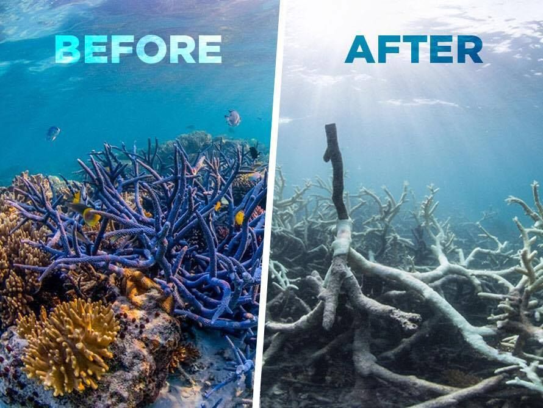
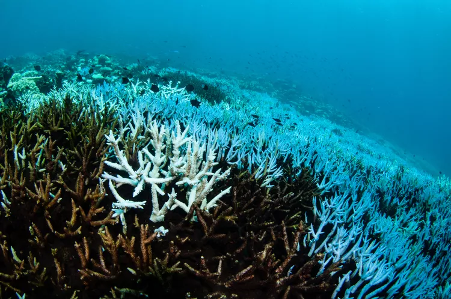
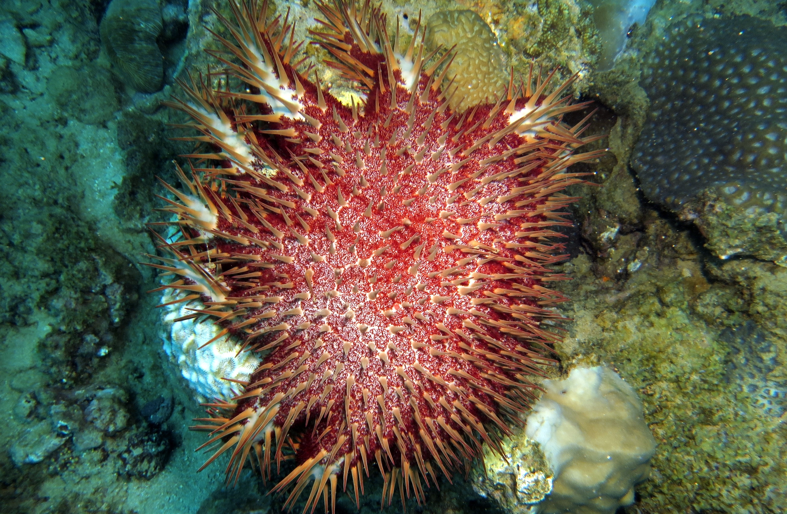

Impact on Humans and the Environment
The loss of coral reefs has far-reaching consequences, impacting both marine life and human communities.
- Loss of biodiversity and habitat destruction for marine species.
- Economic losses in industries reliant on coral reefs, such as tourism and fishing.
- Increased coastal erosion and loss of natural protection against storms.
1. Loss of Biodiversity
Credit: Marine Conservation Society
Coral reefs support about 25% of all marine species, including fish, invertebrates, and plants. When reefs degrade, many species lose their habitats, leading to a decline in biodiversity. This loss disrupts the balance of marine ecosystems and can lead to the extinction of vulnerable species (Hughes et al., 2017).
The IPCC’s Sixth Assessment Report reveals that the degradation of coral reefs in Southeast Asia and the Indian Ocean could affect approximately 4.5 million people due to the impacts of global warming and human activities. Coral reefs, which cover only 0.1% of global ocean surfaces, support over 25% of marine biodiversity and are critical for the livelihoods of millions of fishers in the region. Economic losses from coral degradation are estimated at $27.78 million to $31.72 million annually in Vietnam and around $33.6 million in Bangladesh.
The report warns of the risk of irreversible loss of marine ecosystems, especially with a temperature increase of 2°C or more. The oceans absorb over 93% of excess heat, resulting in marine heatwaves that can disrupt fisheries. Coral growth is predicted to decline significantly, with rising seawater temperatures causing widespread bleaching and increased disease severity. Urgent conservation and climate action are needed to protect these vital ecosystems.
For more information, visit Down to Earth.
2. Economic Impact
Credit: Courtesy of Marine Françoise @ Reef Conservation
The economic value of coral reefs is immense. They contribute billions to global economies through tourism, fisheries, and coastal protection. As reefs degrade, communities that rely on these ecosystems face financial challenges, impacting local economies and food security (Cesar et al., 2003).
Coral reefs in Mauritius and Seychelles cover over 2,653 km² and are essential for local economies, particularly through tourism, which accounted for around 12% of GDP in Mauritius and over 39% in Seychelles in 2019. These reefs provide significant ecosystem services valued at approximately USD 2.7 trillion annually. They support over 4,000 fish species and contribute to coastal protection, buffering shorelines against storms and flooding, making them vital for tourism.
However, coral reefs face significant threats. Climate change is the primary concern, with predictions that 70-90% of reef-building corals may die even with modest global warming. Major bleaching events have already occurred, severely impacting coral cover. Human activities, such as overfishing, pollution from land-based sources, and unsustainable coastal development, exacerbate these threats.
The UNDP, with support from the Adaptation Fund, is implementing a project aimed at restoring coral reefs in Mauritius and Seychelles, focusing on enhancing resilience against climate change by restoring 2.5 hectares of reefs in Mauritius and 2.5 hectares in Seychelles, along with additional efforts in Rodrigues.
For more information, visit Coral Reefs and Their Importance for Island Economies.
3. Coastal Protection

Healthy coral reefs with live coral provide much greater protection against coastal flooding than degraded reefs with low live coral cover. NOAA
Coral reefs play a crucial role in providing flood protection, valued at over $1.8 billion annually in the U.S. They mitigate flood damage, reducing direct costs to properties by more than $800 million and preventing additional losses of around $1 billion related to lives and livelihoods. Reefs act as natural barriers, absorbing wave energy and preventing coastal flooding, which is especially vital during tropical storms.
Despite their benefits, coral reefs are under severe threat from climate change, pollution, and overfishing, leading to significant degradation. Valuing natural infrastructure, like coral reefs, is essential to encourage investment in their protection. Disaster recovery funds should be allocated to rebuilding reefs, given their proven ability to reduce flood damage.
Specific regions, such as the Caribbean, are vulnerable, with estimates suggesting that restoring reefs can reduce storm damage by over $160 million annually. Investing in coral reef conservation yields long-term economic benefits for coastal communities, especially in light of increasing storm intensity and frequency.
For more information, visit NOAA.